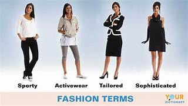

Terms for Different Types of Clothing

Fashion includes several types of clothing. This category encompasses the occasions for which apparel is designed as well as different categories of sizes.
activewear- Clothing designed to be worn during exercise or sports activities is referred to as activewear. Examples include yoga pants, basketball shorts, sweatshirts, tennis skirts, and other related items.
bespoke - The term bespoke refers to clothing that is custom-made for a particular person at that person's request. The pattern for creating the clothing item is made for the individual. The most common bespoke items are men's suits.
capsule wardrobe - A capsule wardrobe consists of specific clothing items designed to be worn together in a variety of different combinations to create different looks. When a brand produces mix and match pieces designed to be used interchangeably without having to add in other pieces, that is a capsule wardrobe.
corporate - Corporate apparel is designed to be worn in traditional business environments. It primarily includes suits and related separates designed to be worn as suits. Pieces tend to be designed in classic styles, with elements like label width and the cut of pants, skirts and jackets being adjusted to current fashion.
designer - In fashion terminology, designer clothing refers to pricy, ready-to-wear apparel with a designer brand name on the label. It is mass-produced for sale in retail stores or their online equivalent. These are typically quality or luxurious items that reflect the style of the day.
eveningwear - The term eveningwear describes apparel designed to be worn to nighttime formal occasions, such as cocktail parties, charity balls, evening weddings, and other such occasions. Tuxedos are common men's eveningwear. For women, eveningwear includes ball gowns or ornate tops paired with dressy palazzo pants.
haute couture - The French phrase haute couture translates to "high fashion" in English. This term is used to refer to very high-end exclusive fashions custom-fitted for the wearer. True haute couture pieces are handmade, one-of-a-kind pieces.
juniors - The word juniors is used for clothing designed for young girls who have outgrown children's sizes but are not yet ready for adult sizes. Juniors sizes are odd numbers (3, 5, 7 and on, stopping at 15). They are cut for figures that have not yet developed curves that are accounted for in misses sizes.
misses - Misses fashions are designed for adult women. Misses sizes are even numbers, typically ranging from size two to 16, though some lines include zero and 18. They are roomier in the bust and hips than juniors sizes, yet less so than women's sizes.
oversize - Garments that are supposed to fit extremely loosely are said to be oversized. Shawls and throws are often designed to be oversized, as are many t-shirts, muumuu style dresses and swimming suit coverups.
petites - Fashions that fall into the category of petites are designed for women who are 5'3" or below. They are sized similar to misses fashions but are proportionately altered to account for the smaller frame of women who are petite in stature.
reversible - Clothing that is designed to be worn with either side facing out is reversible. It's common for jackets to be reversible, often with water repellent fabric on one side and flannel on the others. Items in a capsule wardrobe collection are sometimes reversible as well, providing even more options to the wearer.
sportswear - The word sportswear is used to describe casual apparel that can be worn for any occasion where professional or formal attire is not required. It includes things like khaki pants, polo style shirts, button-down shirts, and other similar items.
vintage - True vintage clothing items are ones made in a previous era that are not yet antique. Vintage pieces are typically described as items between 20 and 99 years old. Sometimes new clothing is made in a vintage style, which means it reflects the look of apparel made during an earlier timeframe.
women's - Women's sizes are designed for women who need a more generous cut than misses sizes. They are typically designed with a "W" after the even-numbered size. Most women's lines start at 14W, though some start smaller. For example, women's retailer Lane Bryant generally carries sizes 10W through 32W.
Welcome to Fabreeq, your number one source for all things fashion. We're dedicated to provide you the very best of fashion knowledge, with an emphasis on history, styles, and the latest trends.
Have questions or want to work with us? Reach out at info@fabreeq.com.